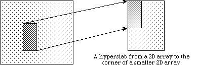
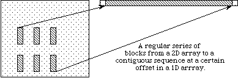
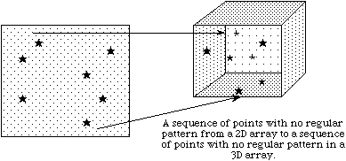
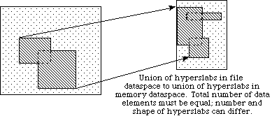

1. What Is HDF5?
HDF5 is a completely new Hierarchical Data Format product consisting of a data format specification and a supporting library implementation. HDF5 is designed to address some of the limitations of the older HDF product and to address current and anticipated requirements of modern systems and applications. 1
We urge you to look at HDF5, the format and the library, and give us
feedback on what you like or do not like about it, and what features
you would like to see added to it.
Why HDF5?
HDF5 includes the following improvements.
Changes in the Current Release
A detailed list of changes in HDF5 between the current release and
the preceding major release can be found in the file
RELEASE.txt,
with a highlights summary in the document
"HDF5 Software Changes from Release to Release"
in the
HDF5 Application Developer's Guide.
2. HDF5 File Organization and Data Model
HDF5 files are organized in a hierarchical structure, with two primary structures: groups and datasets.
Working with groups and group members is similar in many ways to working with directories and files in UNIX. As with UNIX directories and files, objects in an HDF5 file are often described by giving their full (or absolute) path names.
- /
/foo foo.
/foo/zoo foo, which in turn is a member of the root group.
Any HDF5 group or dataset may have an associated attribute list. An HDF5 attribute is a user-defined HDF5 structure that provides extra information about an HDF5 object. Attributes are described in more detail below.
HDF5 Groups
An HDF5 group is a structure containing zero or more HDF5 objects. A group has two parts:
HDF5 Datasets
A dataset is stored in a file in two parts: a header and a data array.
The header contains information that is needed to interpret the array portion of the dataset, as well as metadata (or pointers to metadata) that describes or annotates the dataset. Header information includes the name of the object, its dimensionality, its number-type, information about how the data itself is stored on disk, and other information used by the library to speed up access to the dataset or maintain the file's integrity.
There are four essential classes of information in any header: name, datatype, dataspace, and storage layout:
Name.
A dataset name is a sequence of alphanumeric ASCII characters.Datatype.
HDF5 allows one to define many different kinds of datatypes. There are two categories of datatypes: atomic datatypes and compound datatypes. Atomic datatypes can also be system-specific, orNATIVE, and all datatypes can be named:
- Atomic datatypes are those that are not decomposed at the datatype interface level, such as integers and floats.
NATIVEdatatypes are system-specific instances of atomic datatypes.- Compound datatypes are made up of atomic datatypes.
- Named datatypes are either atomic or compound datatypes that have been specifically designated to be shared across datasets.
Atomic datatypes include integers and floating-point numbers. Each atomic type belongs to a particular class and has several properties: size, order, precision, and offset. In this introduction, we consider only a few of these properties.
Atomic classes include integer, float, string, bit field, and opaque. (Note: Only integer, float and string classes are available in the current implementation.)
Properties of integer types include size, order (endian-ness), and signed-ness (signed/unsigned).
Properties of float types include the size and location of the exponent and mantissa, and the location of the sign bit.
The datatypes that are supported in the current implementation are:
NATIVE datatypes. Although it is possible to describe nearly any kind of atomic datatype, most applications will use predefined datatypes that are supported by their compiler. In HDF5 these are called native datatypes. NATIVE datatypes are C-like datatypes that are generally supported by the hardware of the machine on which the library was compiled. In order to be portable, applications should almost always use the NATIVE designation to describe data values in memory.
The NATIVE architecture has base names which do not follow the same rules as the others. Instead, native type names are similar to the C type names. The following figure shows several examples.
|
Example |
Corresponding C Type |
H5T_NATIVE_CHAR |
signed char |
H5T_NATIVE_UCHAR |
unsigned char |
H5T_NATIVE_SHORT |
short |
H5T_NATIVE_USHORT |
unsigned short |
H5T_NATIVE_INT |
int |
H5T_NATIVE_UINT |
unsigned |
H5T_NATIVE_LONG |
long |
H5T_NATIVE_ULONG |
unsigned long |
H5T_NATIVE_LLONG |
long long |
H5T_NATIVE_ULLONG |
unsigned long long |
H5T_NATIVE_FLOAT |
float |
H5T_NATIVE_DOUBLE |
double |
H5T_NATIVE_LDOUBLE |
long double |
H5T_NATIVE_HSIZE |
hsize_t |
H5T_NATIVE_HSSIZE |
hssize_t |
H5T_NATIVE_HERR |
herr_t |
H5T_NATIVE_HBOOL |
hbool_t |
See Datatypes in the HDF User’s Guide for further information.
A compound datatype is one in which a collection of several datatypes are represented as a single unit, a compound datatype, similar to a struct in C. The parts of a compound datatype are called members. The members of a compound datatype may be of any datatype, including another compound datatype. It is possible to read members from a compound type without reading the whole type.
Named datatypes. Normally each dataset has its own datatype, but sometimes we may want to share a datatype among several datasets. This can be done using a named datatype. A named datatype is stored in the file independently of any dataset, and referenced by all datasets that have that datatype. Named datatypes may have an associated attributes list.
See Datatypes
Dataspace.
A dataset dataspace describes the dimensionality of the dataset. The dimensions of a dataset can be fixed (unchanging), or they may be unlimited, which means that they are extendible (i.e. they can grow larger).Properties of a dataspace consist of the rank (number of dimensions) of the data array, the actual sizes of the dimensions of the array, and the maximum sizes of the dimensions of the array. For a fixed-dimension dataset, the actual size is the same as the maximum size of a dimension. When a dimension is unlimited, the maximum size is set to the
valueH5P_UNLIMITED. (An example below shows how to create extendible datasets.)
A dataspace can also describe portions of a dataset, making it possible to do partial I/O operations on selections. Selection is supported by the dataspace interface (H5S). Given an n-dimensional dataset, there are currently four ways to do partial selection:
Since I/O operations have two end-points, the raw data transfer functions require two dataspace arguments: one describes the application memory dataspace or subset thereof, and the other describes the file dataspace or subset thereof.
See Dataspaces
in the HDF User’s Guide for further information.Storage layout.
The HDF5 format makes it possible to store data in a variety of ways. The default storage layout format is contiguous, meaning that data is stored in the same linear way that it is organized in memory. Two other storage layout formats are currently defined for HDF5: compact, and chunked. In the future, other storage layouts may be added.Compact storage is used when the amount of data is small and can be stored directly in the object header. (Note: Compact storage is not supported in this release.)
Chunked storage involves dividing the dataset into equal-sized "chunks" that are stored separately. Chunking has three important benefits.
- It makes it possible to achieve good performance when accessing subsets of the datasets, even when the subset to be chosen is orthogonal to the normal storage order of the dataset.
- It makes it possible to compress large datasets and still achieve good performance when accessing subsets of the dataset.
- It makes it possible efficiently to extend the dimensions of a dataset in any direction.
See Datasets and Dataset Chunking Issues
in the HDF User’s Guide for further information. We particularly encourage you to read Dataset Chunking Issues since the issue is complex and beyond the scope of this document.HDF5 Attributes
Attributes are small named datasets that are attached to primary datasets, groups, or named datatypes. Attributes can be used to describe the nature and/or the intended usage of a dataset or group. An attribute has two parts: (1) a name and (2) a value. The value part contains one or more data entries of the same datatype.The Attribute API (H5A) is used to read or write attribute information. When accessing attributes, they can be identified by name or by an index value. The use of an index value makes it possible to iterate through all of the attributes associated with a given object.
The HDF5 format and I/O library are designed with the assumption that attributes are small datasets. They are always stored in the object header of the object they are attached to. Because of this, large datasets should not be stored as attributes. How large is "large" is not defined by the library and is up to the user's interpretation. (Large datasets with metadata can be stored as supplemental datasets in a group with the primary dataset.)
See Attributes
in the HDF User’s Guide for further information.The File as Written to Media
For those who are interested, this section takes a look at the low-level elements of the file as the file is written to disk (or other storage media) and the relation of those low-level elements to the higher level elements with which users typically are more familiar. The HDF5 API generally exposes only the high-level elements to the user; the low-level elements are often hidden. The rest of this Introduction does not assume an understanding of this material.
The format of an HDF5 file on disk encompasses several key ideas of the HDF4 and AIO file formats as well as addressing some shortcomings therein. The new format is more self-describing than the HDF4 format and is more uniformly applied to data objects in the file.

| |
|
Figure 1: Relationships among the
HDF5 root group, other groups, and objects
|
An HDF5 file appears to the user as a directed graph. The nodes of this graph are the higher-level HDF5 objects that are exposed by the HDF5 APIs:
- Groups
- Datasets
- Datatypes
- Dataspaces
At the lowest level, as information is actually written to the disk, an HDF5 file is made up of the following objects:
- A super block
- B-tree nodes (containing either symbol nodes or raw data chunks)
- Object headers

Figure 2: HDF5 objects -- datasets, datatypes, or dataspaces
- Collections
- Local heaps
- Free space
See the HDF5 File Format
Specification for further information.
3. The HDF5 Applications Programming Interface (API)
The current HDF5 API is implemented only in C. The API provides routines for creating HDF5 files, creating and writing groups, datasets, and their attributes to HDF5 files, and reading groups, datasets and their attributes from HDF5 files.
Naming conventions
All C routines in the HDF 5 library begin with a prefix of the form H5*, where * is a single letter indicating the object on which the operation is to be performed:
Example:
H5Fopen, which opens an HDF5 file.
Example:
H5Gset,which sets the working group to the specified group.
Example:
H5Tcopy,which creates a copy of an existing datatype.
Example:
H5Screate_simple, which creates simple dataspaces.
Example:
H5Dread, which reads all or part of a dataset into a buffer in memory.
Example:
H5Pset_chunk, which sets the number of dimensions and the size of a chunk.
Example:
H5Aget_name, which retrieves name of an attribute.
Example:
H5Zregister, which registers new compression and uncompression functions for use with the HDF5 library.
Example:
H5Eprint, which prints the current error stack.
Example:
H5Rcreate, which creates a reference.
Example:
H5Iget_type, which retrieves the type of an object.
Include Files
There are a number definitions and declarations that should be included with any HDF5 program. These definitions and declarations are contained in several include files. The main include
file ishdf5.h. This file includes all of the other files that your program is likely to need. Be sure to include hdf5.h in any program that uses the HDF5 library.
Programming Models
In this section we describe how to program some basic operations on files, including how to
How to create an HDF5 file
This programming model shows how to create a file and also how to close the file.
- Create the file.
- Close the file.
The following code fragment implements the specified model. If there is a possibility that the file already exists, the user must add the flag H5ACC_TRUNC to the access mode to overwrite the previous file's information.
hid_t file; /* identifier */
/*
* Create a new file using H5ACC_TRUNC access,
* default file creation properties, and default file
* access properties.
* Then close the file.
*/
file = H5Fcreate(FILE, H5ACC_TRUNC, H5P_DEFAULT, H5P_DEFAULT);
status = H5Fclose(file);
How to create and initialize the essential components of a dataset for writing to a file
Recall that datatypes and dimensionality (dataspace) are independent objects, which are created separately from any dataset that they might be attached to. Because of this the creation of a dataset requires, at a minimum, separate definitions of datatype, dimensionality, and dataset. Hence, to create a dataset the following steps need to be taken:
- Create and initialize a dataspace for the dataset to be written.
- Define the datatype for the dataset to be written.
- Create and initialize the dataset itself.
The following code illustrates the creation of these three components of a dataset object.
hid_t dataset, datatype, dataspace; /* declare identifiers */
/*
* Create dataspace: Describe the size of the array and
* create the data space for fixed size dataset.
*/
dimsf[0] = NX;
dimsf[1] = NY;
dataspace = H5Screate_simple(RANK, dimsf, NULL);
/*
* Define datatype for the data in the file.
* We will store little endian integer numbers.
*/
datatype = H5Tcopy(H5T_NATIVE_INT);
status = H5Tset_order(datatype, H5T_ORDER_LE);
/*
* Create a new dataset within the file using defined
* dataspace and datatype and default dataset creation
* properties.
* NOTE: H5T_NATIVE_INT can be used as datatype if conversion
* to little endian is not needed.
*/
dataset = H5Dcreate(file, DATASETNAME, datatype, dataspace, H5P_DEFAULT);
How to discard objects when they are no longer needed
The datatype, dataspace and dataset objects should be released once they are no longer needed by a program. Since each is an independent object, the must be released (or closed) separately. The following lines of code close the datatype, dataspace, and datasets that were created in the preceding section.
H5Tclose(datatype);
H5Dclose(dataset);
H5Sclose(dataspace);
How to write a dataset to a new file
Having defined the datatype, dataset, and dataspace parameters, you write out the data with a call to
H5Dwrite.
/*
* Write the data to the dataset using default transfer
* properties.
*/
status = H5Dwrite(dataset, H5T_NATIVE_INT, H5S_ALL, H5S_ALL,
H5P_DEFAULT, data);
The third and fourth parameters of
H5Dwrite in the example describe the dataspaces in memory and in the file, respectively. They are set to the value H5S_ALL to indicate that an entire dataset is to be written. In a later section we look at how we would access a portion of a dataset.
Example 1 contains a program that creates a file and a dataset, and writes the dataset to the file.
Reading is analogous to writing. If, in the previous example, we wish to read an entire dataset, we would use the same basic calls with the same parameters. Of course, the routine H5Dread would replace H5Dwrite.
Getting information about a dataset
Although reading is analogous to writing, it is often necessary to query a file to obtain information about a dataset. For instance, we often need to know about the datatype associated with a dataset, as well dataspace information (e.g. rank and dimensions). There are several "get" routines for obtaining this information. The following code segment illustrates how we would get this kind of information:
/*
* Get datatype and dataspace identifiers and then query
* dataset class, order, size, rank and dimensions.
*/
datatype = H5Dget_type(dataset); /* datatype identifier */
class = H5Tget_class(datatype);
if (class == H5T_INTEGER) printf("Data set has INTEGER type \n");
order = H5Tget_order(datatype);
if (order == H5T_ORDER_LE) printf("Little endian order \n");
size = H5Tget_size(datatype);
printf(" Data size is %d \n", size);
dataspace = H5Dget_space(dataset); /* dataspace identifier */
rank = H5Sget_simple_extent_ndims(dataspace);
status_n = H5Sget_simple_extent_dims(dataspace, dims_out);
printf("rank %d, dimensions %d x %d \n", rank, dims_out[0], dims_out[1]);
Reading and writing a portion of a dataset
In the previous discussion, we describe how to access an entire dataset with one write (or read) operation. HDF5 also supports access to portions (or selections) of a dataset in one read/write operation. Currently selections are limited to hyperslabs, their unions, and the lists of independent points. Both types of selection will be discussed in the following sections. Several sample cases of selection reading/writing are shown on the following figure.
| a  |
| b  |
| c  |
| d  |
In example (a) a single hyperslab is read from the midst of a two-dimensional array in a file and stored in the corner of a smaller two-dimensional array in memory. In (b) a regular series of blocks is read from a two-dimensional array in the file and stored as a contiguous sequence of values at a certain offset in a one-dimensional array in memory. In (c) a sequence of points with no regular pattern is read from a two-dimensional array in a file and stored as a sequence of points with no regular pattern in a three-dimensional array in memory. In (d) a union of hyperslabs in the file dataspace is read and the data is stored in another union of hyperslabs in the memory dataspace.
As these examples illustrate, whenever we perform partial read/write operations on the data, the following information must be provided: file dataspace, file dataspace selection, memory dataspace and memory dataspace selection. After the required information is specified, actual read/write operation on the portion of data is done in a single call to the HDF5 read/write functions H5Dread(write).
Selecting hyperslabs
Hyperslabs are portions of datasets. A hyperslab selection can be a logically contiguous collection of points in a dataspace, or it can be regular pattern of points or blocks in a dataspace. The following picture illustrates a selection of regularly spaced 3x2 blocks in an 8x12 dataspace.
|
|
|
|
|
|
|
|
||||
|
|
|
|
|
|
|
|
||||
|
|
|
|
|
|
|
|
||||
|
|
|
|
|
|
|
|
||||
|
|
|
|
|
|
|
|
||||
|
|
|
|
|
|
|
|
||||
Four parameters are required to describe a completely general hyperslab. Each parameter is an array whose rank is the same as that of the dataspace:
start start is (0,1).
stride stride is (4,3). If the stride parameter is set to NULL, the stride size defaults to 1 in each dimension.
count count is (2,4).
block block is (3,2). If the block parameter is set to NULL, the block size defaults to a single element in each dimension, as if the block array was set to all 1s.
In what order is data copied? When actual I/O is performed data values are copied by default from one dataspace to another in so-called row-major, or C order. That is, it is assumed that the first dimension varies slowest, the second next slowest, and so forth.
Example without strides or blocks. Suppose we want to read a 3x4 hyperslab from a dataset in a file beginning at the element This describes the dataspace from which we wish to read. We need to define the dataspace in memory analogously. Suppose, for instance, that we have in memory a 3 dimensional 7x7x3 array into which we wish to read the 3x4 hyperslab described above beginning at the element Notice that we must describe two things: the dimensions of the in-memory array, and the size and position of the hyperslab that we wish to read in. The following code illustrates how this would be done.
<1,2> in the dataset. In order to do this, we must create a dataspace that describes the overall rank and dimensions of the dataset in the file, as well as the position and size of the hyperslab that we are extracting from that dataset. The following code illustrates the selection of the hyperslab in the file dataspace.
/*
* Define file dataspace.
*/
dataspace = H5Dget_space(dataset); /* dataspace identifier */
rank = H5Sget_simple_extent_ndims(dataspace);
status_n = H5Sget_simple_extent_dims(dataspace, dims_out, NULL);
/*
* Define hyperslab in the dataset.
*/
offset[0] = 1;
offset[1] = 2;
count[0] = 3;
count[1] = 4;
status = H5Sselect_hyperslab(dataspace, H5S_SELECT_SET, offset, NULL,
count, NULL);
<3,0,0>. Since the in-memory dataspace has three dimensions, we have to describe the hyperslab as an array with three dimensions, with the last dimension being 1: <3,4,1>.
/*
* Define memory dataspace.
*/
dimsm[0] = 7;
dimsm[1] = 7;
dimsm[2] = 3;
memspace = H5Screate_simple(RANK_OUT,dimsm,NULL);
/*
* Define memory hyperslab.
*/
offset_out[0] = 3;
offset_out[1] = 0;
offset_out[2] = 0;
count_out[0] = 3;
count_out[1] = 4;
count_out[2] = 1;
status = H5Sselect_hyperslab(memspace, H5S_SELECT_SET, offset_out, NULL,
count_out, NULL);
/*
Example 2 contains a complete program that performs these operations.
Example with strides and blocks. Consider the 8x12 dataspace described above, in which we selected eight 3x2 blocks. Suppose we wish to fill these eight blocks.
|
|
|
|
|
|
|
|
||||
|
|
|
|
|
|
|
|
||||
|
|
|
|
|
|
|
|
||||
|
|
|
|
|
|
|
|
||||
|
|
|
|
|
|
|
|
||||
|
|
|
|
|
|
|
|
||||
This hyperslab has the following parameters: Suppose that the source dataspace in memory is this 50-element one dimensional array called start=(0,1), stride=(4,3), count=(2,4), block=(3,2).
vector:
|
|
|
|
|
|
|
|
|
|
|
|
The following code will write 48 elements from
vector to our file dataset, starting with the second element in vector.
/* Select hyperslab for the dataset in the file, using 3x2 blocks, (4,3) stride * (2,4) count starting at the position (0,1). */ start[0] = 0; start[1] = 1; stride[0] = 4; stride[1] = 3; count[0] = 2; count[1] = 4; block[0] = 3; block[1] = 2; ret = H5Sselect_hyperslab(fid, H5S_SELECT_SET, start, stride, count, block); /* * Create dataspace for the first dataset. */ mid1 = H5Screate_simple(MSPACE1_RANK, dim1, NULL); /* * Select hyperslab. * We will use 48 elements of the vector buffer starting at the second element. * Selected elements are 1 2 3 . . . 48 */ start[0] = 1; stride[0] = 1; count[0] = 48; block[0] = 1; ret = H5Sselect_hyperslab(mid1, H5S_SELECT_SET, start, stride, count, block); /* * Write selection from the vector buffer to the dataset in the file. * ret = H5Dwrite(dataset, H5T_NATIVE_INT, midd1, fid, H5P_DEFAULT, vector)
After these operations, the file dataspace will have the following values.
|
|
|
|
|
|
|
|
||||
|
|
|
|
|
|
|
|
||||
|
|
|
|
|
|
|
|
||||
|
|
|
|
|
|
|
|
||||
|
|
|
|
|
|
|
|
||||
|
|
|
|
|
|
|
|
||||
Notice that the values are inserted in the file dataset in row-major order.
Example 3 includes this code and other example code illustrating the use of hyperslab selection.
Selecting a list of independent points
A hyperslab specifies a regular pattern of elements in a dataset. It is also possible to specify a list of independent elements to read or write using the functionH5Sselect_elements. Suppose, for example, that we wish to write the values 53, 59, 61, 67 to the following elements of the 8x12 array used in the previous example: (0,0), (3,3), (3,5), and (5,6). The following code selects the points and writes them to the dataset:
#define FSPACE_RANK 2 /* Dataset rank as it is stored in the file */
#define NPOINTS 4 /* Number of points that will be selected
and overwritten */
#define MSPACE2_RANK 1 /* Rank of the second dataset in memory */
#define MSPACE2_DIM 4 /* Dataset size in memory */
hsize_t dim2[] = {MSPACE2_DIM}; /* Dimension size of the second
dataset (in memory) */
int values[] = {53, 59, 61, 67}; /* New values to be written */
hsize_t coord[NPOINTS][FSPACE_RANK]; /* Array to store selected points
from the file dataspace */
/*
* Create dataspace for the second dataset.
*/
mid2 = H5Screate_simple(MSPACE2_RANK, dim2, NULL);
/*
* Select sequence of NPOINTS points in the file dataspace.
*/
coord[0][0] = 0; coord[0][1] = 0;
coord[1][0] = 3; coord[1][1] = 3;
coord[2][0] = 3; coord[2][1] = 5;
coord[3][0] = 5; coord[3][1] = 6;
ret = H5Sselect_elements(fid, H5S_SELECT_SET, NPOINTS,
(const hsize_t **)coord);
/*
* Write new selection of points to the dataset.
*/
ret = H5Dwrite(dataset, H5T_NATIVE_INT, mid2, fid, H5P_DEFAULT, values);
After these operations, the file dataspace will have the following values:
|
|
|
|
|
|
|
|
|
|||
|
|
|
|
|
|
|
|
||||
|
|
|
|
|
|
|
|
||||
|
|
||||||||||
|
|
|
|
|
|
|
|
||||
|
|
|
|
|
|
|
|
|
|||
|
|
|
|
|
|
|
|
||||
Example 3 contains a complete program that performs these subsetting operations.
Selecting a union of hyperslabs
The HDF5 Library allows the user to select a union of hyperslabs and
write or read the selection into another selection. The shapes of
the two selections may differ, but the number of elements must be equal.
Suppose that we want to read two overlapping hyperslabs from the dataset written in the previous example into a union of hyperslabs in the memory dataset. This exercise is illustrated in the two figures immediately below. Note that the memory dataset has a different shape from the previously written dataset. Similarly, the selection in the memory dataset could have a different shape than the selected union of hyperslabs in the original file; for simplicity, we will preserve the selection's shape in this example.
|
|
|
|
|
|
|
|
|
|||
|
|
|
|
|
|
|
|
||||
|
|
|
|
|
|
|
|
||||
|
|
||||||||||
|
|
|
|
|
|
|
|
||||
|
|
|
|
|
|
|
|
|
|||
|
|
|
|
|
|
|
|
||||
shading. This shading may not appear properly in black-and-white printed copies.)
Blank cells in this figure actually contain values written when the dataset was initialized.
|
|
|
||||||
|
|
|
|
|
||||
|
|
|||||||
|
|
|
|
|||||
|
|
|
|
|
||||
|
|
|
|
|||||
shading. This shading may not appear properly in black-and-white printed copies.)
The following lines of code show the required steps.
First obtain the dataspace identifier for the dataset in the file.
/*
* Get dataspace of the open dataset.
*/
fid = H5Dget_space(dataset);
Then select the hyperslab with the size 3x4 and
the left upper corner at the position (1,2):
/*
* Select first hyperslab for the dataset in the file. The following
* elements are selected:
* 10 0 11 12
* 18 0 19 20
* 0 59 0 61
*
*/
start[0] = 1; start[1] = 2;
block[0] = 1; block[1] = 1;
stride[0] = 1; stride[1] = 1;
count[0] = 3; count[1] = 4;
ret = H5Sselect_hyperslab(fid, H5S_SELECT_SET, start, stride, count, block);
Now select the second hyperslab with the size 6x5 at the position (2,4),
and create the union with the first hyperslab.
/*
* Add second selected hyperslab to the selection.
* The following elements are selected:
* 19 20 0 21 22
* 0 61 0 0 0
* 27 28 0 29 30
* 35 36 67 37 38
* 43 44 0 45 46
* 0 0 0 0 0
* Note that two hyperslabs overlap. Common elements are:
* 19 20
* 0 61
*/
start[0] = 2; start[1] = 4;
block[0] = 1; block[1] = 1;
stride[0] = 1; stride[1] = 1;
count[0] = 6; count[1] = 5;
ret = H5Sselect_hyperslab(fid, H5S_SELECT_OR, start, stride, count, block);
Note that when we add the selected hyperslab to the union, the
second argument to the H5Sselect_hyperslab function
has to be H5S_SELECT_OR instead of H5S_SELECT_SET.
Using H5S_SELECT_SET would reset the selection to
the second hyperslab.
Now define the memory dataspace and select the union of the hyperslabs in the memory dataset.
/*
* Create memory dataspace.
*/
mid = H5Screate_simple(MSPACE_RANK, mdim, NULL);
/*
* Select two hyperslabs in memory. Hyperslabs has the same
* size and shape as the selected hyperslabs for the file dataspace.
*/
start[0] = 0; start[1] = 0;
block[0] = 1; block[1] = 1;
stride[0] = 1; stride[1] = 1;
count[0] = 3; count[1] = 4;
ret = H5Sselect_hyperslab(mid, H5S_SELECT_SET, start, stride, count, block);
start[0] = 1; start[1] = 2;
block[0] = 1; block[1] = 1;
stride[0] = 1; stride[1] = 1;
count[0] = 6; count[1] = 5;
ret = H5Sselect_hyperslab(mid, H5S_SELECT_OR, start, stride, count, block);
Finally we can read the selected data from the file dataspace to the selection
in memory with one call to the H5Dread function.
ret = H5Dread(dataset, H5T_NATIVE_INT, mid, fid, H5P_DEFAULT, matrix_out);
Example 3 includes this code along with the previous selection example.
Creating variable-length datatypes
Variable-length (VL) datatypes are sequences of an existing datatype (atomic, VL, or compound) which are not fixed in length from one dataset location to another. In essence, they are similar to C character strings -- a sequence of a type which is pointed to by a particular type of pointer -- although they are implemented more closely to FORTRAN strings by including an explicit length in the pointer instead of using a particular value to terminate the sequence.VL datatypes are useful to the scientific community in many different ways, some of which are listed below:
- Ragged arrays: Multi-dimensional ragged arrays can be implemented with the last (fastest changing) dimension being ragged by using a VL datatype as the type of the element stored. (Or as a field in a compound datatype.)
- Fractal arrays: If a compound datatype has a VL field of another compound type with VL fields (a nested VL datatype), this can be used to implement ragged arrays of ragged arrays, to whatever nesting depth is required for the user.
- Polygon lists: A common storage requirement is to efficiently store arrays of polygons with different numbers of vertices. VL datatypes can be used to efficiently and succinctly describe an array of polygons with different numbers of vertices.
- Character strings: Perhaps the most common use of VL datatypes will be to store C-like VL character strings in dataset elements or as attributes of objects.
- Indices: An array of VL object references could be used as an index to
all the objects in a file which contain a particular sequence of
dataset values. Perhaps an array something like the following:
Value1: Object1, Object3, Object9 Value2: Object0, Object12, Object14, Object21, Object22 Value3: Object2 Value4: <none> Value5: Object1, Object10, Object12 . . - Object Tracking: An array of VL dataset region references can be used as
a method of tracking objects or features appearing in a sequence of
datasets. Perhaps an array of them would look like:
Feature1: Dataset1:Region, Dataset3:Region, Dataset9:Region Feature2: Dataset0:Region, Dataset12:Region, Dataset14:Region, Dataset21:Region, Dataset22:Region Feature3: Dataset2:Region Feature4: <none> Feature5: Dataset1:Region, Dataset10:Region, Dataset12:Region . .
Variable-length datatype memory management
With each element possibly being of different sequence lengths for a dataset with a VL datatype, the memory for the VL datatype must be dynamically allocated. Currently there are two methods of managing the memory for VL datatypes: the standard C malloc/free memory allocation routines or a method of calling user-defined memory management routines to allocate or free memory. Since the memory allocated when reading (or writing) may be complicated to release, an HDF5 routine is provided to traverse a memory buffer and free the VL datatype information without leaking memory.Variable-length datatypes cannot be divided
VL datatypes are designed so that they cannot be subdivided by the library with selections, etc. This design was chosen due to the complexities in specifying selections on each VL element of a dataset through a selection API that is easy to understand. Also, the selection APIs work on dataspaces, not on datatypes. At some point in time, we may want to create a way for dataspaces to have VL components to them and we would need to allow selections of those VL regions, but that is beyond the scope of this document.What happens if the library runs out of memory while reading?
It is possible for a call toH5Dread to fail while reading in
VL datatype information if the memory required exceeds that which is available.
In this case, the H5Dread call will fail gracefully and any
VL data which has been allocated prior to the memory shortage will be returned
to the system via the memory management routines detailed below.
It may be possible to design a partial read API function at a
later date, if demand for such a function warrants.
Strings as variable-length datatypes
Since character strings are a special case of VL data that is implemented in many different ways on different machines and in different programming languages, they are handled somewhat differently from other VL datatypes in HDF5.
HDF5 has native VL strings for each language API, which are stored the
same way on disk, but are exported through each language API in a natural way
for that language. When retrieving VL strings from a dataset, users may choose
to have them stored in memory as a native VL string or in HDF5's hvl_t
struct for VL datatypes.
VL strings may be created in one of two ways: by creating a VL datatype with
a base type of H5T_NATIVE_ASCII, H5T_NATIVE_UNICODE,
etc., or by creating a string datatype and setting its length to
H5T_VARIABLE. The second method is used to access
native VL strings in memory. The library will convert between the two types,
but they are stored on disk using different datatypes and have different
memory representations.
Multi-byte character representations, such as UNICODE or wide characters in C/C++, will need the appropriate character and string datatypes created so that they can be described properly through the datatype API. Additional conversions between these types and the current ASCII characters will also be required.
Variable-width character strings (which might be compressed data or some other encoding) are not currently handled by this design. We will evaluate how to implement them based on user feedback.
Variable-length datatype APIs
Creation
VL datatypes are created with theH5Tvlen_create() function
as follows:
- type_id =
H5Tvlen_create(hid_tbase_type_id);
The base datatype will be the datatype that the sequence is composed of, characters for character strings, vertex coordinates for polygon lists, etc. The base datatype specified for the VL datatype can be of any HDF5 datatype, including another VL datatype, a compound datatype, or an atomic datatype.
Querying base datatype of VL datatype
It may be necessary to know the base datatype of a VL datatype before memory is allocated, etc. The base datatype is queried with theH5Tget_super() function, described in the H5T documentation.
Querying minimum memory required for VL information
It order to predict the memory usage thatH5Dread may need
to allocate to store VL data while reading the data, the
H5Dget_vlen_size() function is provided:
- herr_t
H5Dvlen_get_buf_size(hid_tdataset_id, hid_ttype_id, hid_tspace_id, hsize_t *size)
This routine checks the number of bytes required to store the VL data from
the dataset, using the space_id for the selection in the dataset
on disk and the type_id for the memory representation of the
VL data in memory. The *size value is modified according to
how many bytes are required to store the VL data in memory.
Specifying how to manage memory for the VL datatype
The memory management method is determined by dataset transfer properties passed into theH5Dread and H5Dwrite functions
with the dataset transfer property list.
Default memory management is set by using H5P_DEFAULT
for the dataset transfer property list identifier.
If H5P_DEFAULT is used with H5Dread,
the system malloc and free calls
will be used for allocating and freeing memory.
In such a case, H5P_DEFAULT should also be passed
as the property list identifier to H5Dvlen_reclaim.
The rest of this subsection is relevant only to those who choose not to use default memory management.
The user can choose whether to use the
system malloc and free calls or
user-defined, or custom, memory management functions.
If user-defined memory management functions are to be used,
the memory allocation and free routines must be defined via
H5Pset_vlen_mem_manager(), as follows:
- herr_t
H5Pset_vlen_mem_manager(hid_tplist_id, H5MM_allocate_talloc, void *alloc_info, H5MM_free_tfree, void *free_info)
The alloc and free parameters
identify the memory management routines to be used.
If the user has defined custom memory management routines,
alloc and/or free should be set to make
those routine calls (i.e., the name of the routine is used as
the value of the parameter);
if the user prefers to use the system's malloc
and/or free, the alloc and
free parameters, respectively, should be set to
NULL
The prototypes for the user-defined functions would appear as follows:
typedefvoid *(*H5MM_allocate_t)(size_tsize, void *info) ;typedefvoid (*H5MM_free_t)(void *mem, void *free_info) ;
The alloc_info and free_info parameters can be
used to pass along any required information to the user's memory management
routines.
In summary, if the user has defined custom memory management
routines, the name(s) of the routines are passed in the
alloc and free parameters and the
custom routines' parameters are passed in the
alloc_info and free_info parameters.
If the user wishes to use the system malloc and
free functions, the alloc and/or
free parameters are set to NULL
and the alloc_info and free_info
parameters are ignored.
Recovering memory from VL buffers read in
The complex memory buffers created for a VL datatype may be reclaimed with theH5Dvlen_reclaim() function call, as follows:
- herr_t
H5Dvlen_reclaim(hid_ttype_id, hid_tspace_id, hid_tplist_id, void *buf);
The type_id must be the datatype stored in the buffer,
space_id describes the selection for the memory buffer
to free the VL datatypes within,
plist_id is the dataset transfer property list which
was used for the I/O transfer to create the buffer, and
buf is the pointer to the buffer to free the VL memory within.
The VL structures (hvl_t) in the user's buffer are
modified to zero out the VL information after it has been freed.
If nested VL datatypes were used to create the buffer, this routine frees them from the bottom up, releasing all the memory without creating memory leaks.
Example 4 creates a dataset with the variable-length datatype using user-defined functions for memory management.
Creating array datatypes
The array class of datatypes,H5T_ARRAY, allows the
construction of true, homogeneous, multi-dimensional arrays.
Since these are homogeneous arrays, each element of the array will be
of the same datatype, designated at the time the array is created.
Arrays can be nested. Not only is an array datatype used as an element of an HDF5 dataset, but the elements of an array datatype may be of any datatype, including another array datatype.
Array datatypes cannot be subdivided for I/O; the entire array must be transferred from one dataset to another.
Within certain limitations, outlined in the next paragraph, array datatypes may be N-dimensional and of any dimension size. Unlimited dimensions, however, are not supported. Functionality similar to unlimited dimension arrays is available through the use of variable-length datatypes.
The maximum number of dimensions, i.e., the maximum rank, of an array
datatype is specified by the HDF5 library constant H5S_MAX_RANK.
The minimum rank is 1 (one).
All dimension sizes must be greater than 0 (zero).
One array dataype may only be converted to another array datatype if the number of dimensions and the sizes of the dimensions are equal and the datatype of the first array's elements can be converted to the datatype of the second array's elements.
Array datatype APIs
There are three functions that are specific to array datatypes: one,H5Tarray_create, for creating an array datatype,
and two, H5Tget_array_ndims and H5Tget_array_dims,
for working with existing array datatypes.
Creating
The functionH5Tarray_create creates a new array datatype object.
Parameters specify
- the base datatype of each element of the array,
- the rank of the array, i.e., the number of dimensions,
- the size of each dimension, and
- the dimension permutation of the array, i.e., whether the elements of the array are listed in C or FORTRAN order. (Note: The permutation feature is not implemented in Release 1.4.)
H5Tarray_create(
hid_t base,
int rank,
const hsize_t dims[/*rank*/],
const int perm[/*rank*/]
)
Working with existing array datatypes
When working with existing arrays, one must first determine the the rank, or number of dimensions, of the array.
The function H5Tget_array_ndims returns the rank of a
specified array datatype.
H5Tget_array_ndims(
hid_t adtype_id
)
H5Tget_array_dims retrieves the
permutation of the array and the size of each dimension.
(Note: The permutation feature is not implemented in Release 1.4.)
H5Tget_array_dims(
hid_t adtype_id,
hsize_t *dims[],
int *perm[]
)
Example 5 creates an array datatype and a dataset containing elements of the array datatype in an HDF5 file. It then writes the dataset to the file.
Creating compound datatypes
Properties of compound datatypes. A compound datatype is similar to a struct in C or a common block in Fortran. It is a collection of one or more atomic types or small arrays of such types. To create and use of a compound datatype you need to refer to various properties of the data compound datatype:
- It is of class compound.
- It has a fixed total size, in bytes.
- It consists of zero or more members (defined in any order) with unique names and which occupy non-overlapping regions within the datum.
- Each member has its own datatype.
- Each member is referenced by an index number between zero and N-1, where N is the number of members in the compound datatype.
- Each member has a name which is unique among its siblings in a compound datatype.
- Each member has a fixed byte offset, which is the first byte (smallest byte address) of that member in a compound datatype.
- Each member can be a small array of up to four dimensions.
Properties of members of a compound datatype are defined when the member is added to the compound type and cannot be subsequently modified.
Defining compound datatypes. Compound datatypes must be built out of other datatypes. First, one creates an empty compound datatype and specifies its total size. Then members are added to the compound datatype in any order.
Member names. Each member must have a descriptive name, which is the key used to uniquely identify the member within the compound datatype. A member name in an HDF5 datatype does not necessarily have to be the same as the name of the corresponding member in the C struct in memory, although this is often the case. Nor does one need to define all members of the C struct in the HDF5 compound datatype (or vice versa).
Offsets. Usually a C struct will be defined to hold a data point in memory, and the offsets of the members in memory will be the offsets of the struct members from the beginning of an instance of the struct. The library defines the macro to compute the offset of a member within a struct:
HOFFSET(s,m) This macro computes the offset of member m within a struct variable s.
Here is an example in which a compound datatype is created to describe complex numbers whose type is defined by the
complex_t struct.
typedef struct {
double re; /*real part */
double im; /*imaginary part */
} complex_t;
complex_t tmp; /*used only to compute offsets */
hid_t complex_id = H5Tcreate (H5T_COMPOUND, sizeof tmp);
H5Tinsert (complex_id, "real", HOFFSET(tmp,re),
H5T_NATIVE_DOUBLE);
H5Tinsert (complex_id, "imaginary", HOFFSET(tmp,im),
H5T_NATIVE_DOUBLE);
Example 6 shows how to create a compound datatype, write an array that has the compound datatype to the file, and read back subsets of the members.
Creating and writing extendible and chunked datasets
An extendible dataset is one whose dimensions can grow. In HDF5, it is possible to define a dataset to have certain initial dimensions, then later to increase the size of any of the initial dimensions.
For example, you can create and store the following 3x3 HDF5 dataset:
1 1 1
1 1 1
1 1 1
then later to extend this into a 10x3 dataset by adding 7 rows, such as this:
1 1 1
1 1 1
1 1 1
2 2 2
2 2 2
2 2 2
2 2 2
2 2 2
2 2 2
2 2 2
then further extend it to a 10x5 dataset by adding two columns, such as this:
1 1 1 3 3
1 1 1 3 3
1 1 1 3 3
2 2 2 3 3
2 2 2 3 3
2 2 2 3 3
2 2 2 3 3
2 2 2 3 3
2 2 2 3 3
2 2 2 3 3
HDF 5 requires you to use chunking in order to define extendible datasets. Chunking makes it possible to extend datasets efficiently, without having to reorganize storage excessively.
The following operations are required in order to write an extendible dataset:
- Declare the dataspace of the dataset to have unlimited dimensions for all dimensions that might eventually be extended.
- Set dataset creation properties to enable chunking and create a dataset.
- Extend the size of the dataset.
For example, suppose we wish to create a dataset similar to the one shown above. We want to start with a 3x3 dataset, then later extend it in both directions.
Declaring unlimited dimensions. We could declare the dataspace to have unlimited dimensions with the following code, which uses the predefined constant
H5S_UNLIMITED to specify unlimited dimensions.
hsize_t dims[2] = { 3, 3}; /* dataset dimensions
at the creation time */
hsize_t maxdims[2] = {H5S_UNLIMITED, H5S_UNLIMITED};
/*
* Create the data space with unlimited dimensions.
*/
dataspace = H5Screate_simple(RANK, dims, maxdims);
Enabling chunking. We can then set the dataset storage layout properties to enable chunking. We do this using the routine H5Pset_chunk:
hid_t cparms;
hsize_t chunk_dims[2] ={2, 5};
/*
* Modify dataset creation properties to enable chunking.
*/
cparms = H5Pcreate (H5P_DATASET_CREATE);
status = H5Pset_chunk( cparms, RANK, chunk_dims);
Then create a dataset.
/*
* Create a new dataset within the file using cparms
* creation properties.
*/
dataset = H5Dcreate(file, DATASETNAME, H5T_NATIVE_INT, dataspace,
cparms);
Extending dataset size. Finally, when we want to extend the size of the dataset, we invoke H5Dextend to extend the size of the dataset. In the following example, we extend the dataset along the first dimension, by seven rows, so that the new dimensions are <10,3>:
/* * Extend the dataset. Dataset becomes 10 x 3. */ dims[0] = dims[0] + 7; size[0] = dims[0]; size[1] = dims[1]; status = H5Dextend (dataset, size);
Example 7 shows how to create a 3x3 extendible dataset, write the dataset, extend the dataset to 10x3, write the dataset again, extend it again to 10x5, write the dataset again.
Example 8 shows how to read the data written by Example 7.
Working with groups in a file
Groups provide a mechanism for organizing meaningful and extendible sets of datasets within an HDF5 file. The H5G API contains routines for working with groups.
Creating a group. To create a group, use
H5Gcreate. For example, the following code
creates a group called Data in the root group.
/* * Create a group in the file. */ grp = H5Gcreate(file, "/Data", 0);A group may be created in another group by providing the absolute name of the group to the
H5Gcreate
function or by specifying its location. For example,
to create the group Data_new in the
Data group, one can use the following sequence
of calls:
/* * Create group "Data_new" in the group "Data" by specifying * absolute name of the group. */ grp_new = H5Gcreate(file, "/Data/Data_new", 0);or
/* * Create group "Data_new" in the "Data" group. */ grp_new = H5Gcreate(grp, "Data_new", 0);Note that the group identifier
grp is used
as the first parameter in the H5Gcreate function
when the relative name is provided.
The third parameter in H5Gcreate optionally
specifies how much file space to reserve to store the names
that will appear in this group. If a non-positive
value is supplied, then a default size is chosen.
H5Gclose closes the group and releases the
group identifier.
Creating a dataset in a particular group. As with groups, a dataset can be created in a particular group by specifying its absolute name as illustrated in the following example:
/*
* Create the dataset "Compressed_Data" in the group using the
* absolute name. The dataset creation property list is modified
* to use GZIP compression with the compression effort set to 6.
* Note that compression can be used only when the dataset is
* chunked.
*/
dims[0] = 1000;
dims[1] = 20;
cdims[0] = 20;
cdims[1] = 20;
dataspace = H5Screate_simple(RANK, dims, NULL);
plist = H5Pcreate(H5P_DATASET_CREATE);
H5Pset_chunk(plist, 2, cdims);
H5Pset_deflate( plist, 6);
dataset = H5Dcreate(file, "/Data/Compressed_Data", H5T_NATIVE_INT,
dataspace, plist);
A relative dataset name may also be used when a dataset is
created. First obtain the identifier of the group in which
the dataset is to be created. Then create the dataset
with H5Dcreate as illustrated in the following
example:
/*
* Open the group.
*/
grp = H5Gopen(file, "Data");
/*
* Create the dataset "Compressed_Data" in the "Data" group
* by providing a group identifier and a relative dataset
* name as parameters to the H5Dcreate function.
*/
dataset = H5Dcreate(grp, "Compressed_Data", H5T_NATIVE_INT,
dataspace, plist);
Accessing an object in a group.
Any object in a group can be accessed by its absolute or
relative name. The following lines of code show how to use
the absolute name to access the dataset
Compressed_Data in the group Data
created in the examples above:
/* * Open the dataset "Compressed_Data" in the "Data" group. */ dataset = H5Dopen(file, "/Data/Compressed_Data");The same dataset can be accessed in another manner. First access the group to which the dataset belongs, then open the dataset.
/* * Open the group "data" in the file. */ grp = H5Gopen(file, "Data"); /* * Access the "Compressed_Data" dataset in the group. */ dataset = H5Dopen(grp, "Compressed_Data");
Example 9
shows how to create a group in a file and a
dataset in a group. It uses the iterator function
H5Giterate to find the names of the objects
in the root group, and H5Glink and H5Gunlink
to create a new group name and delete the original name.
Working with attributes
Think of an attribute as a small datasets that is attached to a normal dataset or group. The H5A API contains routines for working with attributes. Since attributes share many of the characteristics of datasets, the programming model for working with attributes is analogous in many ways to the model for working with datasets. The primary differences are that an attribute must be attached to a dataset or a group, and subsetting operations cannot be performed on attributes.
To create an attribute belonging to a particular dataset or group, first create a dataspace for the attribute with the call to H5Screate, then create the attribute using H5Acreate. For example, the following code creates an attribute called Integer_attribute that is a member of a dataset whose identifier is dataset. The attribute identifier is attr2. H5Awrite then sets the value of the attribute of that of the integer variable point. H5Aclose then releases the attribute identifier.
int point = 1; /* Value of the scalar attribute */
/*
* Create scalar attribute.
*/
aid2 = H5Screate(H5S_SCALAR);
attr2 = H5Acreate(dataset, "Integer attribute", H5T_NATIVE_INT, aid2,
H5P_DEFAULT);
/*
* Write scalar attribute.
*/
ret = H5Awrite(attr2, H5T_NATIVE_INT, &point);
/*
* Close attribute dataspace.
*/
ret = H5Sclose(aid2);
/*
* Close attribute.
*/
ret = H5Aclose(attr2);
To read a scalar attribute whose name and datatype are known, first open the attribute using H5Aopen_name, then use H5Aread to get its value. For example the following reads a scalar attribute called Integer_attribute whose datatype is a native integer, and whose parent dataset has the identifier dataset.
/*
* Attach to the scalar attribute using attribute name, then read and
* display its value.
*/
attr = H5Aopen_name(dataset,"Integer attribute");
ret = H5Aread(attr, H5T_NATIVE_INT, &point_out);
printf("The value of the attribute \"Integer attribute\" is %d \n", point_out);
ret = H5Aclose(attr);
Reading an attribute whose characteristics are not known. It may be necessary to query a file to obtain information about an attribute, namely its name, datatype, rank and dimensions. The following code opens an attribute by its index value using H5Aopen_index, then reads in information about its datatype.
/*
* Attach to the string attribute using its index, then read and display the value.
*/
attr = H5Aopen_idx(dataset, 2);
atype = H5Tcopy(H5T_C_S1);
H5Tset_size(atype, 4);
ret = H5Aread(attr, atype, string_out);
printf("The value of the attribute with the index 2 is %s \n", string_out);
In practice, if the characteristics of attributes are not known,
the code involved in accessing and processing the attribute can be quite
complex. For this reason, HDF5 includes a function called
H5Aiterate, which applies a user-supplied function to each
of a set of attributes. The user-supplied function can contain the code
that interprets, accesses and processes each attribute.
Example 10 illustrates the use of the H5Aiterate function, as well as the other attribute examples described above.
Working with references to objects
In HDF5, objects (i.e. groups, datasets, and named datatypes) are usually accessed by name. This access method was discussed in previous sections. There is another way to access stored objects -- by reference.An object reference is based on the relative file address of the object header in the file and is constant for the life of the object. Once a reference to an object is created and stored in a dataset in the file, it can be used to dereference the object it points to. References are handy for creating a file index or for grouping related objects by storing references to them in one dataset.
Creating and storing references to objects
The following steps are involved in creating and storing file references to objects:- Create the objects or open them if they already exist in the file.
- Create a dataset to store the objects' references.
- Create and store references to the objects in a buffer.
- Write a buffer with the references to the dataset.
Programming example
Example 11 creates a group and two datasets and a named datatype in the group. References to these four objects are stored in the dataset in the root group.Notes: Note the following elements of this example:
- The following code,
dataset = H5Dcreate ( fid1,"Dataset3",H5T_STD_REF_OBJ,sid1,H5P_DEFAULT );creates a dataset to store references. Notice that theH5T_SDT_REF_OBJdatatype is used to specify that references to objects will be stored. The datatypeH5T_STD_REF_DSETREGis used to store the dataset region references and is be discussed later. - The next few calls to the
H5Rcreatefunction create references to the objects and store them in the buffer wbuf. The signature of theH5Rcreatefunction is:herr_t H5Rcreate ( void* buf, hid_t loc_id, const char *name, H5R_type_t ref_type, hid_t space_id )- The first argument specifies the buffer to store the reference.
- The second and third arguments specify the name of the referenced
object. In the example, the file identifier fid1 and
absolute name of the dataset
/Group1/Dataset1identify the dataset. One could also use the group identifier of groupGroup1and the relative name of the datasetDataset1to create the same reference. - The fourth argument specifies the type of the reference.
The example uses references to the objects (
H5R_OBJECT). Another type of reference, reference to the dataset region (H5R_DATASET_REGION), is discussed later. - The fifth argument specifies the space identifier. When references
to the objects are created, it should be set to
-1.
- The
H5Dwritefunction writes a dataset with the references to the file. Notice that theH5T_SDT_REF_OBJdatatype is used to describe the dataset's memory datatype.
trefer1.h5 file created by this example
are as follows:
HDF5 "trefer1.h5" {
GROUP "/" {
DATASET "Dataset3" {
DATATYPE { H5T_REFERENCE }
DATASPACE { SIMPLE ( 4 ) / ( 4 ) }
DATA {
DATASET 0:1696, DATASET 0:2152, GROUP 0:1320, DATATYPE 0:2268
}
}
GROUP "Group1" {
DATASET "Dataset1" {
DATATYPE { H5T_STD_U32LE }
DATASPACE { SIMPLE ( 4 ) / ( 4 ) }
DATA {
0, 3, 6, 9
}
}
DATASET "Dataset2" {
DATATYPE { H5T_STD_U8LE }
DATASPACE { SIMPLE ( 4 ) / ( 4 ) }
DATA {
0, 0, 0, 0
}
}
DATATYPE "Datatype1" {
H5T_STD_I32BE "a";
H5T_STD_I32BE "b";
H5T_IEEE_F32BE "c";
}
}
}
}
Notice how the data in dataset Dataset3 is described.
The two numbers with the colon in between represent a unique identifier
of the object. These numbers are constant for the life of the object.
Reading references and accessing objects using references
The following steps are involved:- Open the dataset with the references and read them.
The
H5T_STD_REF_OBJdatatype must be used to describe the memory datatype. - Use the read reference to obtain the identifier of the object the reference points to.
- Open the dereferenced object and perform the desired operations.
- Close all objects when the task is complete.
Programming example
Example 12 opens and reads datasetDataset3 from the file created created
in Example 11. Then the program dereferences the references
to dataset Dataset1, the group and the named datatype,
and opens those objects.
The program reads and displays the dataset's data, the group's comment, and
the number of members of the compound datatype.
Output file contents: The output of this program is as follows:
Dataset data : 0 3 6 9 Group comment is Foo! Number of compound datatype members is 3
Notes: Note the following elements of this example:
- The
H5Dreadfunction was used to read datasetDataset3containing the references to the objects. TheH5T_STD_REF_OBJmemory datatype was used to read references to memory. -
H5Rdereferenceobtains the object's identifier. The signature of this function is:hid_t H5Rdereference (hid_t datatset, H5R_type_t ref_type, void *ref)- The first argument is an identifier of the dataset with the references.
- The second argument specifies the reference type.
H5R_OBJECTwas used to specify a reference to an object. Another type, used to specifiy a reference to a dataset region and discussed later, isH5R_DATASET_REGION. - The third argument is a buffer to store the reference to be read.
- The function returns an identifier of the object the reference
points to. In this simplified situation, the type that was
stored in the dataset is known. When the type of the object is
unknown,
H5Rget_object_typeshould be used to identify the type of object the reference points to.
Working with references to dataset regions
A dataset region reference points to the dataset selection by storing the relative file address of the dataset header and the global heap offset of the referenced selection. The selection referenced is located by retrieving the coordinates of the areas in the selection from the global heap. This internal mechanism of storing and retrieving dataset selections is transparent to the user. A reference to the dataset selection (region) is constant for the life of the dataset.Creating and storing references to dataset regions
The following steps are involved in creating and storing references to the dataset regions:- Create a dataset to store the dataset regions (selections).
- Create selections in the dataset(s). Dataset(s) should already exist
in the file.
- Create references to the selections and store them in a buffer.
- Write references to the dataset regions in the file.
- Close all objects.
Programming example
Example 13 creates a dataset in the file. Then it creates a dataset to store references to the dataset regions (selections). The first selection is a 6 x 6 hyperslab. The second selection is a point selection in the same dataset. References to both selections are created and stored in the buffer, and then written to the dataset in the file.Notes: Note the following elements of this example:
- The code,
dset1=H5Dcreate(fid1,"Dataset1",H5T_STD_REF_DSETREG,sid1,H5P_DEFAULT);creates a dataset to store references to the dataset(s) regions (selections). Notice that theH5T_STD_REF_DSETREGdatatype is used. - This program uses hyperslab and point selections. The dataspace
handle sid2 is used for the calls to
H5Sselect_hyperslabandH5Sselect_elements. The handle was created when datasetDataset2was created and it describes the dataset's dataspace. It was not closed when the dataset was closed to decrease the number of function calls used in the example. In a real application program, one should open the dataset and determine its dataspace using theH5Dget_spacefunction. -
H5Rcreateis used to create a dataset region reference and store it in a buffer. The signature of the function is:herr_t H5Rcreate(void *buf, hid_t loc_id, const char *name, H5R_type_t ref_type, hid_t space_id)- The first argument specifies the buffer to store the reference.
- The second and third arguments specify the name of the referenced
dataset. In the example, the file identifier fid1 and the
absolute name of the dataset
/Dataset2were used to identify the dataset. The reference to the region of this dataset is stored in the buffer buf. - The fourth argument specifies the type of the reference. Since
the example creates references to the dataset regions, the
H5R_DATASET_REGIONdatatype is used. - The fifth argument is a dataspace identifier of the referenced dataset.
trefer2.h5 created by this program
are as follows:
HDF5 "trefer2.h5" {
GROUP "/" {
DATASET "Dataset1" {
DATATYPE { H5T_REFERENCE }
DATASPACE { SIMPLE ( 4 ) / ( 4 ) }
DATA {
DATASET 0:744 {(2,2)-(7,7)}, DATASET 0:744 {(6,9), (2,2), (8,4), (1,6),
(2,8), (3,2), (0,4), (9,0), (7,1), (3,3)}, NULL, NULL
}
}
DATASET "Dataset2" {
DATATYPE { H5T_STD_U8LE }
DATASPACE { SIMPLE ( 10, 10 ) / ( 10, 10 ) }
DATA {
0, 3, 6, 9, 12, 15, 18, 21, 24, 27,
30, 33, 36, 39, 42, 45, 48, 51, 54, 57,
60, 63, 66, 69, 72, 75, 78, 81, 84, 87,
90, 93, 96, 99, 102, 105, 108, 111, 114, 117,
120, 123, 126, 129, 132, 135, 138, 141, 144, 147,
150, 153, 156, 159, 162, 165, 168, 171, 174, 177,
180, 183, 186, 189, 192, 195, 198, 201, 204, 207,
210, 213, 216, 219, 222, 225, 228, 231, 234, 237,
240, 243, 246, 249, 252, 255, 255, 255, 255, 255,
255, 255, 255, 255, 255, 255, 255, 255, 255, 255
}
}
}
}
Notice how raw data of the dataset with the dataset regions is displayed.
Each element of the raw data consists of a reference to the dataset
(DATASET number1:number2) and its selected region.
If the selection is a hyperslab, the corner coordinates of the hyperslab
are displayed.
For the point selection, the coordinates of each point are displayed.
Since only two selections were stored, the third and fourth elements of the
dataset Dataset1 are set to NULL.
This was done by the buffer inizialization in the program.
Reading references to dataset regions
The following steps are involved in reading references to dataset regions and referenced dataset regions (selections).- Open and read the dataset containing references to the dataset regions.
The datatype
H5T_STD_REF_DSETREGmust be used during read operation. - Use
H5Rdereferenceto obtain the dataset identifier from the read dataset region reference.ORUseH5Rget_regionto obtain the dataspace identifier for the dataset containing the selection from the read dataset region reference. - With the dataspace identifier, the H5S interface functions,
H5Sget_select_*, can be used to obtain information about the selection. - Close all objects when they are no longer needed.
Programming example
Example 14 reads a dataset containing dataset region references. It reads data from the dereferenced dataset and displays the number of elements and raw data. Then it reads two selections: a hyperslab selection and a point selection. The program queries a number of points in the hyperslab and the coordinates and displays them. Then it queries a number of selected points and their coordinates and displays the information.Output: The output of this program is :
Number of elements in the dataset is : 100 0 3 6 9 12 15 18 21 24 27 30 33 36 39 42 45 48 51 54 57 60 63 66 69 72 75 78 81 84 87 90 93 96 99 102 105 108 111 114 117 120 123 126 129 132 135 138 141 144 147 150 153 156 159 162 165 168 171 174 177 180 183 186 189 192 195 198 201 204 207 210 213 216 219 222 225 228 231 234 237 240 243 246 249 252 255 255 255 255 255 255 255 255 255 255 255 255 255 255 255 Number of elements in the hyperslab is : 36 Hyperslab coordinates are : ( 2 , 2 ) ( 7 , 7 ) Number of selected elements is : 10 Coordinates of selected elements are : ( 6 , 9 ) ( 2 , 2 ) ( 8 , 4 ) ( 1 , 6 ) ( 2 , 8 ) ( 3 , 2 ) ( 0 , 4 ) ( 9 , 0 ) ( 7 , 1 ) ( 3 , 3 )Notes: Note the following elements of this example:
- The dataset with the region references was read by
H5Dreadwith theH5T_STD_REF_DSETREGdatatype specified. - The read reference can be used to obtain the dataset identifier
with the following call:
dset2 = H5Rdereference (dset1,H5R_DATASET_REGION,&rbuf[0]);or to obtain spacial information (dataspace and selection) with the call toH5Rget_region:sid2=H5Rget_region(dset1,H5R_DATASET_REGION,&rbuf[0]);The reference to the dataset region has information for both the dataset itself and its selection. In both functions:- The first parameter is an identifier of the dataset with the region references.
- The second parameter specifies the type of reference stored. In this example, a reference to the dataset region is stored.
- The third parameter is a buffer containing the reference of the specified type.
- This example introduces several
H5Sget_select* functions used to obtain information about selections:H5Sget_select_npoints:returns the number of elements in the hyperslab
H5Sget_select_hyper_nblocks:returns the number of blocks in the hyperslab
H5Sget_select_blocklist:returns the "lower left" and "upper right" coordinates of the blocks in the hyperslab selection
H5Sget_select_bounds:returns the coordinates of the "minimal" block containing a hyperslab selection
H5Sget_select_elem_npoints:returns the number of points in the element selection
H5Sget_select_elem_points:returns the coordinates of the element selection
4. Example Codes
For the example codes, see Introduction to HDF5 -- Example Codes.|
Introduction to HDF5 HDF5 User Guide |
HDF5 Reference Manual Other HDF5 documents and links |
|
The HDF Group Help Desk: Describes HDF5 Release 1.6.10, November 2009 Last modified: 6 February 2006 | Copyright |